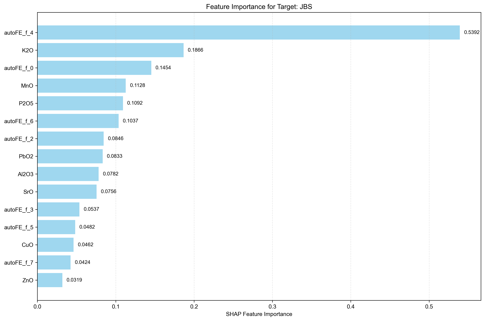
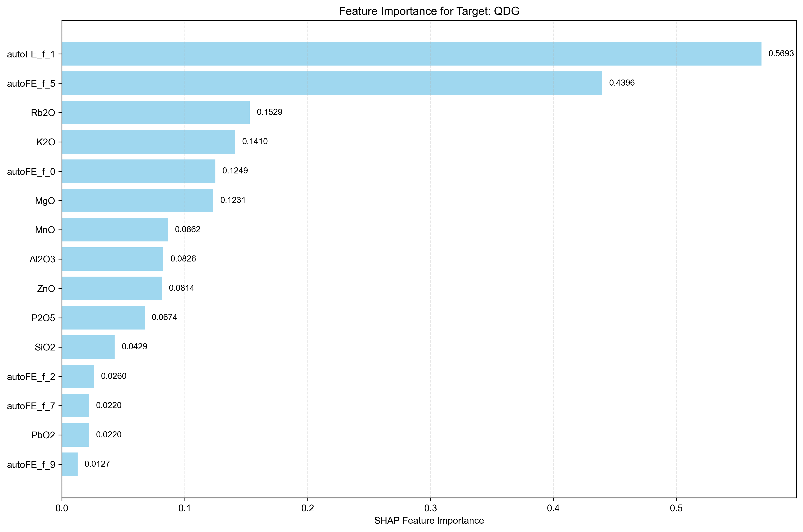
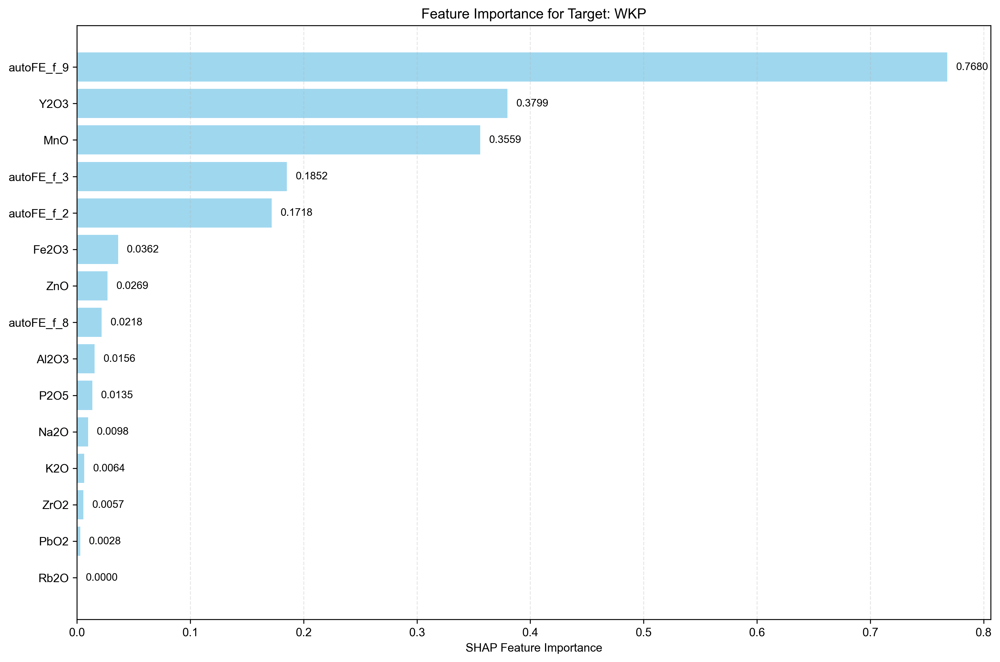
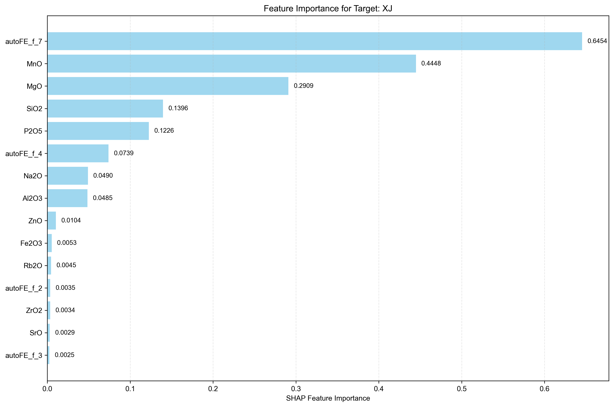
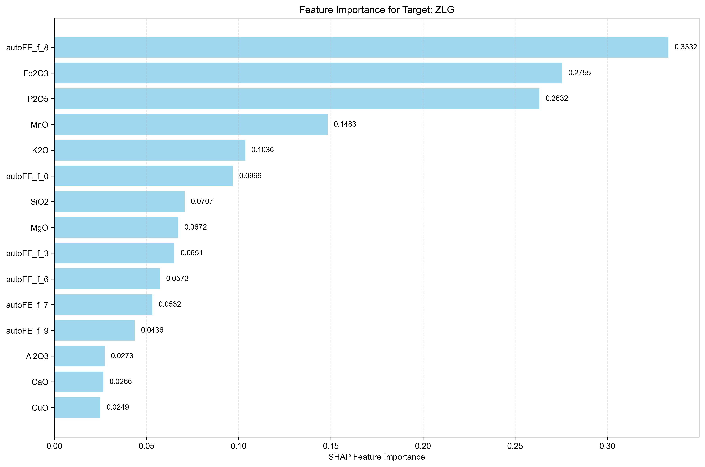

Analysis Method: SHAP
Number of Targets: 5
Generated on:
Targets Analyzed: JBS, QDG, WKP, XJ, ZLG
| Rank | Feature Name | SHAP Importance | Relative Importance (%) |
|---|---|---|---|
| 1 | autoFE_f_4 | 0.5392 | 28.44% |
| 2 | K2O | 0.1866 | 9.84% |
| 3 | autoFE_f_0 | 0.1454 | 7.67% |
| 4 | MnO | 0.1128 | 5.95% |
| 5 | P2O5 | 0.1092 | 5.76% |
| 6 | autoFE_f_6 | 0.1037 | 5.47% |
| 7 | autoFE_f_2 | 0.0846 | 4.46% |
| 8 | PbO2 | 0.0833 | 4.39% |
| 9 | Al2O3 | 0.0782 | 4.13% |
| 10 | SrO | 0.0756 | 3.99% |
| 11 | autoFE_f_3 | 0.0537 | 2.83% |
| 12 | autoFE_f_5 | 0.0482 | 2.54% |
| 13 | CuO | 0.0462 | 2.44% |
| 14 | autoFE_f_7 | 0.0424 | 2.24% |
| 15 | ZnO | 0.0319 | 1.68% |
| 16 | autoFE_f_9 | 0.0307 | 1.62% |
| 17 | autoFE_f_1 | 0.0230 | 1.21% |
| 18 | Na2O | 0.0221 | 1.17% |
| 19 | SiO2 | 0.0199 | 1.05% |
| 20 | CaO | 0.0179 | 0.94% |
| 21 | Y2O3 | 0.0135 | 0.71% |
| 22 | MgO | 0.0123 | 0.65% |
| 23 | Fe2O3 | 0.0058 | 0.31% |
| 24 | ZrO2 | 0.0055 | 0.29% |
| 25 | Rb2O | 0.0039 | 0.21% |
| 26 | As2O3 | 0.0000 | 0.00% |
| 27 | autoFE_f_8 | 0.0000 | 0.00% |

| Rank | Feature Name | SHAP Importance | Relative Importance (%) |
|---|---|---|---|
| 1 | autoFE_f_1 | 0.5693 | 28.11% |
| 2 | autoFE_f_5 | 0.4396 | 21.70% |
| 3 | Rb2O | 0.1529 | 7.55% |
| 4 | K2O | 0.1410 | 6.96% |
| 5 | autoFE_f_0 | 0.1249 | 6.17% |
| 6 | MgO | 0.1231 | 6.08% |
| 7 | MnO | 0.0862 | 4.26% |
| 8 | Al2O3 | 0.0826 | 4.08% |
| 9 | ZnO | 0.0814 | 4.02% |
| 10 | P2O5 | 0.0674 | 3.33% |
| 11 | SiO2 | 0.0429 | 2.12% |
| 12 | autoFE_f_2 | 0.0260 | 1.28% |
| 13 | PbO2 | 0.0220 | 1.09% |
| 14 | autoFE_f_7 | 0.0220 | 1.09% |
| 15 | autoFE_f_9 | 0.0127 | 0.63% |
| 16 | Na2O | 0.0083 | 0.41% |
| 17 | CaO | 0.0082 | 0.40% |
| 18 | As2O3 | 0.0079 | 0.39% |
| 19 | autoFE_f_3 | 0.0046 | 0.23% |
| 20 | autoFE_f_4 | 0.0026 | 0.13% |
| 21 | Fe2O3 | 0.0000 | 0.00% |
| 22 | CuO | 0.0000 | 0.00% |
| 23 | SrO | 0.0000 | 0.00% |
| 24 | Y2O3 | 0.0000 | 0.00% |
| 25 | ZrO2 | 0.0000 | 0.00% |
| 26 | autoFE_f_6 | 0.0000 | 0.00% |
| 27 | autoFE_f_8 | 0.0000 | 0.00% |

| Rank | Feature Name | SHAP Importance | Relative Importance (%) |
|---|---|---|---|
| 1 | autoFE_f_9 | 0.7680 | 38.41% |
| 2 | Y2O3 | 0.3799 | 19.00% |
| 3 | MnO | 0.3559 | 17.80% |
| 4 | autoFE_f_3 | 0.1852 | 9.26% |
| 5 | autoFE_f_2 | 0.1718 | 8.59% |
| 6 | Fe2O3 | 0.0362 | 1.81% |
| 7 | ZnO | 0.0269 | 1.35% |
| 8 | autoFE_f_8 | 0.0218 | 1.09% |
| 9 | Al2O3 | 0.0156 | 0.78% |
| 10 | P2O5 | 0.0135 | 0.68% |
| 11 | Na2O | 0.0098 | 0.49% |
| 12 | K2O | 0.0064 | 0.32% |
| 13 | ZrO2 | 0.0057 | 0.29% |
| 14 | PbO2 | 0.0028 | 0.14% |
| 15 | MgO | 0.0000 | 0.00% |
| 16 | SiO2 | 0.0000 | 0.00% |
| 17 | CaO | 0.0000 | 0.00% |
| 18 | As2O3 | 0.0000 | 0.00% |
| 19 | CuO | 0.0000 | 0.00% |
| 20 | Rb2O | 0.0000 | 0.00% |
| 21 | SrO | 0.0000 | 0.00% |
| 22 | autoFE_f_0 | 0.0000 | 0.00% |
| 23 | autoFE_f_1 | 0.0000 | 0.00% |
| 24 | autoFE_f_4 | 0.0000 | 0.00% |
| 25 | autoFE_f_5 | 0.0000 | 0.00% |
| 26 | autoFE_f_6 | 0.0000 | 0.00% |
| 27 | autoFE_f_7 | 0.0000 | 0.00% |

| Rank | Feature Name | SHAP Importance | Relative Importance (%) |
|---|---|---|---|
| 1 | autoFE_f_7 | 0.6454 | 34.94% |
| 2 | MnO | 0.4448 | 24.08% |
| 3 | MgO | 0.2909 | 15.75% |
| 4 | SiO2 | 0.1396 | 7.56% |
| 5 | P2O5 | 0.1226 | 6.64% |
| 6 | autoFE_f_4 | 0.0739 | 4.00% |
| 7 | Na2O | 0.0490 | 2.65% |
| 8 | Al2O3 | 0.0485 | 2.63% |
| 9 | ZnO | 0.0104 | 0.56% |
| 10 | Fe2O3 | 0.0053 | 0.29% |
| 11 | Rb2O | 0.0045 | 0.24% |
| 12 | autoFE_f_2 | 0.0035 | 0.19% |
| 13 | ZrO2 | 0.0034 | 0.18% |
| 14 | SrO | 0.0029 | 0.16% |
| 15 | autoFE_f_3 | 0.0025 | 0.14% |
| 16 | K2O | 0.0000 | 0.00% |
| 17 | CaO | 0.0000 | 0.00% |
| 18 | As2O3 | 0.0000 | 0.00% |
| 19 | CuO | 0.0000 | 0.00% |
| 20 | PbO2 | 0.0000 | 0.00% |
| 21 | Y2O3 | 0.0000 | 0.00% |
| 22 | autoFE_f_0 | 0.0000 | 0.00% |
| 23 | autoFE_f_1 | 0.0000 | 0.00% |
| 24 | autoFE_f_5 | 0.0000 | 0.00% |
| 25 | autoFE_f_6 | 0.0000 | 0.00% |
| 26 | autoFE_f_8 | 0.0000 | 0.00% |
| 27 | autoFE_f_9 | 0.0000 | 0.00% |

| Rank | Feature Name | SHAP Importance | Relative Importance (%) |
|---|---|---|---|
| 1 | autoFE_f_8 | 0.3332 | 18.79% |
| 2 | Fe2O3 | 0.2755 | 15.53% |
| 3 | P2O5 | 0.2632 | 14.84% |
| 4 | MnO | 0.1483 | 8.36% |
| 5 | K2O | 0.1036 | 5.84% |
| 6 | autoFE_f_0 | 0.0969 | 5.46% |
| 7 | SiO2 | 0.0707 | 3.99% |
| 8 | MgO | 0.0672 | 3.79% |
| 9 | autoFE_f_3 | 0.0651 | 3.67% |
| 10 | autoFE_f_6 | 0.0573 | 3.23% |
| 11 | autoFE_f_7 | 0.0532 | 3.00% |
| 12 | autoFE_f_9 | 0.0436 | 2.46% |
| 13 | Al2O3 | 0.0273 | 1.54% |
| 14 | CaO | 0.0266 | 1.50% |
| 15 | CuO | 0.0249 | 1.40% |
| 16 | autoFE_f_2 | 0.0241 | 1.36% |
| 17 | SrO | 0.0219 | 1.23% |
| 18 | PbO2 | 0.0214 | 1.21% |
| 19 | autoFE_f_5 | 0.0189 | 1.07% |
| 20 | Y2O3 | 0.0081 | 0.46% |
| 21 | autoFE_f_4 | 0.0063 | 0.36% |
| 22 | ZnO | 0.0057 | 0.32% |
| 23 | As2O3 | 0.0041 | 0.23% |
| 24 | Na2O | 0.0035 | 0.20% |
| 25 | ZrO2 | 0.0031 | 0.17% |
| 26 | Rb2O | 0.0000 | 0.00% |
| 27 | autoFE_f_1 | 0.0000 | 0.00% |

• This report shows feature importance analysis for multi-target regression using SHAP method.
• Higher importance values indicate features that have more influence on the target prediction.
• Rankings are calculated independently for each target.
• Relative importance percentages show each feature's contribution relative to all features for that target.